Farming - Gardeners
Introduction
Gardeners can perform two tasks: they can sell various gardening equipment to you and they are able to look after your Farming patch.
Gardeners will not look after every type of Farming patch, though: they only take care of allotments, hop, bush and tree patches (for the locations of the different patches please refer to Farming - Locations).
The gardeners charge for this service, with each kind of plant requiring a different type and amount of produce.
Fruit and Vegetables
Fruit/Vegetable To Look After |
Charge |
 Potatoes |
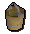 2 x Bucket of compost |
 Onions |
1 x Sack of potatoes |
 Cabbages |
1 x Sack of onions |
| 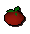 Tomatoes |
2 x Sack of cabbages |
 Sweetcorn |
 10 x Jute fibre |
 Strawberries |
 1 x Basket of apples |
 Watermelons |
 10 x Curry leaf |
Hops
Hop To Look After |
Charge |
 Hammerstone hops |
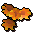 1 x Bunch of marigolds |
| 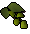 Asgarnian hops |
1 x Sack of onions |
 Yanillian hops |
1 x Basket of tomatoes |
 Krandorian hops |
3 x Sacks of cabbages |
 Wildblood hops |
 1 x Bunch of nasturiums |
| 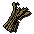 Barley |
3 x Bucket of compost |
Jute fibre |
 6 x Handful of barley malt |
Trees
Tree To Look After |
Charge |
 Oak |
1 Basket of tomatoes |
 Willow |
1 x Basket of apples |
| 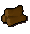 Maple |
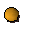 1 x Basket of oranges |
 Yew |
 10 x Cactus spine |
 Magic |
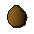 25 x Coconut |
Bushes
Bush To Look After |
Charge |
 Redberry |
4 x Sack of cabbages |
| 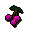 Cadavaberry |
3 x Basket of tomatoes |
| 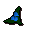 Dwellberry |
3 x Basket of strawberries |
| 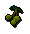 Jangerberry |
6 x Watermelon |
| 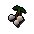 Whiteberry |
8 x Bittercap mushrooms |
Fruit Trees
Fruit Tree To Look After |
Charge |
Apple tree |
9 x Raw sweetcorn |
 Banana tree |
4 x Basket of apples |
Orange tree |
3 x Basket of strawberries |
Curry tree |
5 x Basket of bananas |
 Pineapple tree |
10 x Watermelon |
 Papaya tree |
10 x Pineapple |
Palm tree |
15 x Papaya |
Special Trees
Special To Look After |
Charge |
||
| 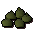 Spirit tree |
 5 x Monkey nuts |
 1 x Monkey bar |
 1 x Ground suqah tooth |
 Calquat* |
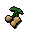 8 x Poison ivy berries |
||
* The gardener who looks after the calquat patch will not be available until you have completed the Jungle Potion quest.
Click here to view the Farming FAQs

More articles in
Farming
|
|
|
Further Help
Need more help? Come chat with us!
|
|